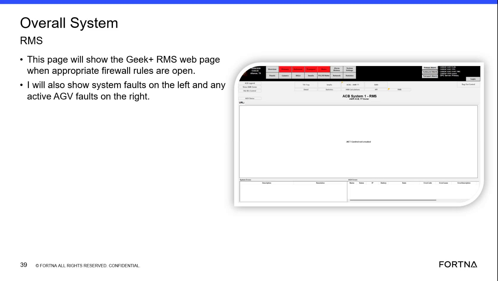

| Procedure ID | proc_check_visible_fault_indicators_during_startup_or_shutdown_state_transitions_v1 |
|---|---|
| Title | Check Visible Fault Indicators During Startup Or Shutdown State Transitions |
| Procedure Type | diagnostic |
| Primary Role | L1_support |
| Support Safe | Yes |
| Validation Status | needs_sme_review |
| Merge Status | source_finalized |
Use the training source's examples to inspect whether a startup or shutdown transition is delayed or incomplete because of a visible system fault or a visible AGV waiting condition.
Use when the system appears to be in startup or shutdown and the transition seems delayed, incomplete, or not progressing as expected, and you need to determine whether the source-described visible fault or waiting examples are present.
Responsible role: L1_support
Instruction:
Observe the system and determine whether it is currently in startup or shutdown. Check whether the transition appears delayed, incomplete, or not progressing as expected.
Expected result:
The current transition state is identified as startup or shutdown, and the observer has confirmed that the transition appears delayed or incomplete.
Screens / Images:
Stop or Escalate If:
Responsible role: L1_support
Instruction:
Check whether the system is showing a system fault indication associated with the delayed startup or shutdown transition.
Expected result:
A visible system fault is either identified or ruled out based on what is available to observe.
Screens / Images:

Stop or Escalate If:
Responsible role: L1_support
Instruction:
If the system is in shutdown, look for the example condition described in the source: an AGV waiting to do an exchange.
Expected result:
The observer determines whether the shutdown delay matches the source example of an AGV waiting to do an exchange.
Screens / Images:
Stop or Escalate If:
Responsible role: L1_support
Instruction:
If the system is in startup, look for the example condition described in the source: a delay while waiting for an AGV on the charger.
Expected result:
The observer determines whether the startup delay matches the source example of waiting for an AGV on the charger.
Screens / Images:
Stop or Escalate If:
Responsible role: L1_support
Instruction:
Record the visible waiting condition or fault indication exactly as observed and compare it to the source-described examples.
Expected result:
A clear observation record exists describing whether a visible system fault, shutdown exchange wait, or startup charger wait was observed.
Stop or Escalate If: